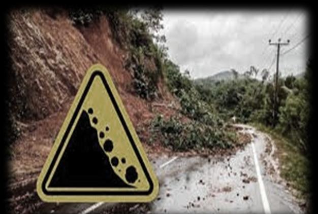
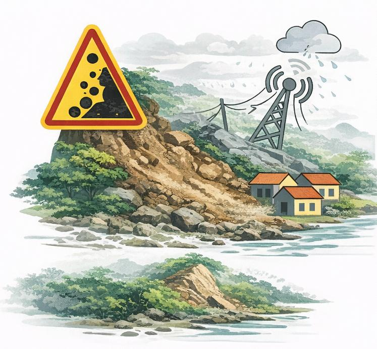
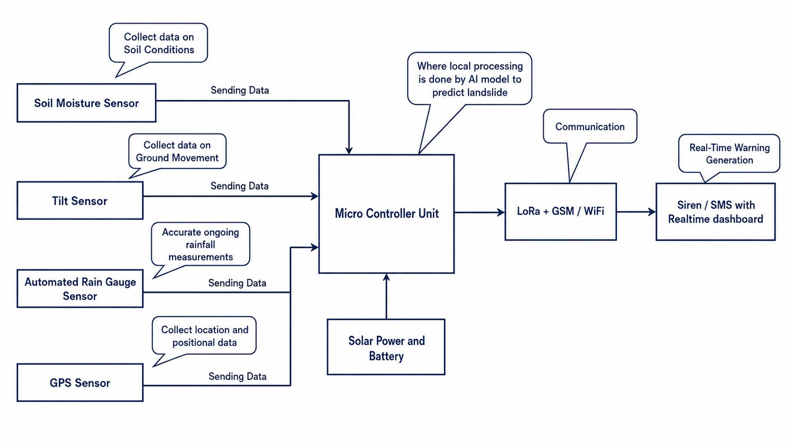
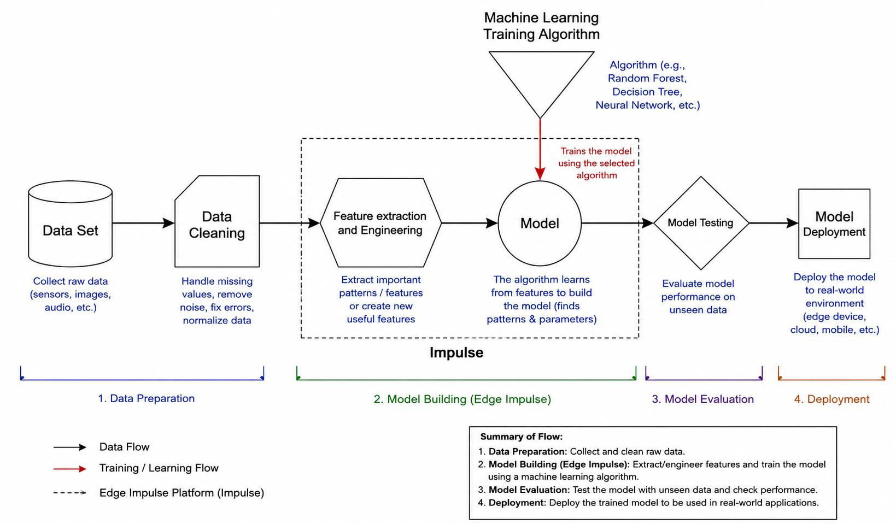

1
Severe consequences
Landslides can cause deaths, property damage and infrastructure destruction.
The project responds to limitations in coverage, connectivity and response time by combining multiple field signals with edge-based AI processing.
Landslides are among the common natural hazards affecting Sri Lanka, especially in hilly areas with high rainfall such as Badulla, Nuwara Eliya and Kegalle. Heavy rainfall, soil saturation and slope instability are highlighted in the project presentation as major contributors.
Because landslides can lead to loss of life, property damage and environmental destruction, continuous monitoring and faster warning delivery are central to the research motivation.

The presentation identifies four practical limitations in current monitoring approaches.
Landslides can cause deaths, property damage and infrastructure destruction.
Existing monitoring systems are not available in every vulnerable area.
Poor mobile or internet coverage can delay warning messages.
Continuous human observation is impractical and unreliable for real-time detection.
The proposed direction therefore prioritizes local processing, multi-sensor inputs and an affordable, deployable field system.

The main objective is to design and develop a low-cost IoT-based landslide early detection system using edge-based artificial intelligence to provide real-time and reliable alerts in landslide-prone areas in Sri Lanka.
Study landslide-prone areas and identify key factors that influence landslides.
Develop a local AI model for fast landslide prediction and alert generation.
Integrate sensors that measure soil moisture, rainfall and ground movement in real time.
The source presentation compares the proposed design with four earlier research examples.
| Criteria | Lee et al. (2020) | Yao et al. (2021) | Caracciolo et al. (2022) | Bhavana & Sagar (2025) | Proposed System |
|---|---|---|---|---|---|
| Data processing | Cloud-based ML | Cloud-based ML | Cloud-based ML | Cloud-based ML | Edge AI on ESP32 |
| Automated rainfall measurement | No | No | No | No | Yes |
| Real-time operation | Limited | Limited | Limited | Limited | Yes |
| Deployment | Complex & costly | Complex & costly | Complex & costly | Complex & costly | Low-cost & easily deployable |
Note: the presentation provides author/year labels but not full bibliography details. Full reference titles should be added when the client supplies the final research references.
Soil moisture, tilt/ground movement, rainfall and GPS data are collected by field sensors and sent to the main controller. Edge AI performs local prediction, while communication through LoRa / GSM / Wi-Fi supports monitoring and alert delivery.
The system architecture also includes solar power and battery support for field operation.


The presentation shows a workflow that moves from dataset preparation and data cleaning into feature extraction/engineering, model training, model testing and final deployment.
Random Forest and k-Nearest Neighbors were both implemented and tested; the Random Forest model was selected as the final model.
See AI results